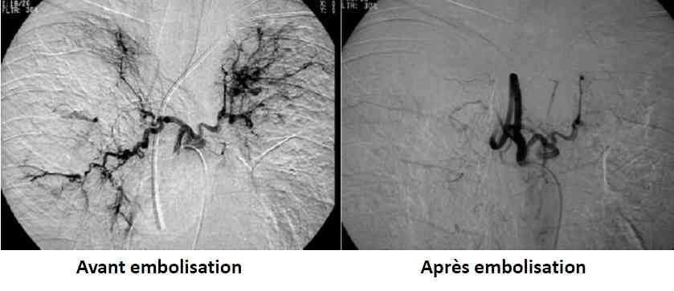

Bienvenue Sur Medical Education
Complications aiguës de l'adulte mucoviscidosique
Spécialité : pneumologie / système immunitaire /
Points importants
-
Pathologie d’origine génétique, de transmission autosomique récessive liée à des mutations du gène codant pour la protéine CFTR (cystic fibrosis transmembrane conductance regulator), qui joue un rôle important dans le transport des ions chlorures à la surface des principaux épithéliums
-
L’histoire naturelle de la mucoviscidose peut comporter des complications aiguës respiratoires (exacerbations respiratoires, hémoptysies, pneumothorax) et non respiratoires (syndrome occlusif, déshydratations aiguës).
-
Leur prise en charge doit se faire en concertation avec le patient qui connait souvent bien sa maladie, son entourage et les médecins du Centre de Ressources et de Compétences pour la Mucoviscidose (CRCM)
-
L’amélioration de l’espérance de vie des patients atteints de mucoviscidose laisse présager d’une augmentation du nombre de patients admis pour des complications aiguës
-
Une admission en réanimation est justifiée en cas de complication sévère
-
Un isolement de contact est nécessaire compte tenu de la fréquence de colonisation à des germes BMR chez ces patients
-
L’atteinte respiratoire conditionne le pronostic :
-
l’hypoxémie est un critère majeur de sévérité associé de manière indépendante à la mortalité
-
l’absence d’acidose respiratoire est faussement rassurante (les anomalies de transferts ioniques liées à la perte cutanée de sodium et de chlorure sont responsables d’une alcalose métabolique qui empêche la survenue d’une acidose respiratoire et la constatation d’un pH abaissé est d’une gravité particulière dans ce contexte)
-
le traitement de référence des hémoptysies graves consiste en l’embolisation artérielle bronchique
-
les pneumothorax, sauf ceux de volume minime, doivent être traités par drainage pleural percutané
-
une antibiothérapie ciblant les bactéries retrouvées sur les derniers examens cytobactériologiques des expectorations doit être débutée dans la majorité des cas quelque soit le type de complication respiratoire (prévient la dégradation de l’état respiratoire liée aux difficultés habituelles de drainage bronchique dans ces situations)
-
les posologies d’antibiotiques doivent être élevées et le choix est orienté par l’efficacité des antibiotiques administrés auparavant (l’antibiogramme est un mauvais prédicteur de l’efficacité clinique des antibiotiques)
-
en cas de défaillance respiratoire sévère, la ventilation non invasive doit être privilégiée et l’intubation ne doit être envisagée qu’en cas d’échec clinique de la ventilation non-invasive
-
Le traitement du syndrome d’obstruction intestinal distal sera médical et l’intervention chirurgicale n’est habituellement pas indiquée.
-
Les complications aiguës survenant dans les suites d’une transplantation pulmonaire, relevant d'une prise en charge très spécifique, ne sont pas abordées
Présentation clinique / CIMU
SIGNES FONCTIONNELS
Exacerbations respiratoires de l’adulte mucoviscidosique
-
Les exacerbations respiratoires (surviennent habituellement 2 à 4 fois/an) :
-
majoration de l’encombrement bronchique
-
majoration du volume des expectorations
-
éventuellement dyspnée
-
Signes généraux fréquemment associés :
-
asthénie
-
amaigrissement
-
anorexie
-
fièvre inconstante et le plus souvent absente
-
Hémoptysie
-
la gravité de l’épisode aigu est liée à l’abondance de l’hémoptysie et à l’altération de la fonction respiratoire à l’état basal :
-
les hémoptysies de faible abondance bien tolérées (expectorations teintées de sang, vol < 5 mL) sont fréquentes et ne nécessitent habituellement pas d’hospitalisation
-
les hémoptysies massives (extériorisation aigüe de plus de 240 mL de sang en 24 heures) sont plus rares (1 patient sur 115/an) et nécessitent une hospitalisation le plus souvent en réanimation
-
Dyspnée (pneumothorax)
-
Le syndrome d’obstruction intestinale distale (SOID):
-
le SOID est une entité spécifique à la mucoviscidose (stéatorrhée mal contrôlée)
-
douleurs abdominales, ralentissement du transit, voire syndrome occlusif (nausées, vomissements)
-
Déshydratation aigue :
-
altération de l’état général
-
signes digestifs (nausées, vomissements)
-
perte de poids rapide
-
crampes
-
sueurs
-
perte de la sensation de soif
-
céphalées
-
plus rarement fièvre pouvant aller jusqu’à l’hyperthermie maligne
-
les déshydratations aiguës liées à un syndrome de perte de sel sont très classiques chez l’enfant mais de reconnaissance plus récente chez l’adulte
CONTEXTE
Terrain
-
Insuffisance respiratoire chronique
Circonstances de survenue
-
Facteurs précipitant une exacerbation parfois retrouvés :
-
interruption des thérapeutiques
-
infection virale
-
aspergillose broncho-pulmonaire allergique
EXAMEN CLINIQUE
-
Pneumothorax (1 patient sur 167/an) :
-
complication classique mais relativement rare
-
survient principalement chez les sujets adultes, d’autant plus que l’atteinte pulmonaire est évoluée (VEMS abaissé, infection chronique par P. aeruginosa ou B. cepacia)
-
symptomatologie peu différente de la présentation clinique habituelle
-
à rechercher de manière systématique devant toute décompensation respiratoire aiguë et subaiguë
-
Syndrome d’obstruction intestinale distale (1 patient sur 160/an) :
-
impaction d’une masse muco-fécale dans l’iléon terminal et le cæcum
-
tableau de syndrome occlusif
CIMU
-
1 à 2 en fonction de la gravité clinique
Signes paracliniques
BIOLOGIQUES
- Pathologie d’origine génétique, de transmission autosomique récessive liée à des mutations du gène codant pour la protéine CFTR (cystic fibrosis transmembrane conductance regulator), qui joue un rôle important dans le transport des ions chlorures à la surface des principaux épithéliums
- L’histoire naturelle de la mucoviscidose peut comporter des complications aiguës respiratoires (exacerbations respiratoires, hémoptysies, pneumothorax) et non respiratoires (syndrome occlusif, déshydratations aiguës).
- Leur prise en charge doit se faire en concertation avec le patient qui connait souvent bien sa maladie, son entourage et les médecins du Centre de Ressources et de Compétences pour la Mucoviscidose (CRCM)
- L’amélioration de l’espérance de vie des patients atteints de mucoviscidose laisse présager d’une augmentation du nombre de patients admis pour des complications aiguës
- Une admission en réanimation est justifiée en cas de complication sévère
- Un isolement de contact est nécessaire compte tenu de la fréquence de colonisation à des germes BMR chez ces patients
-
L’atteinte respiratoire conditionne le pronostic :
- l’hypoxémie est un critère majeur de sévérité associé de manière indépendante à la mortalité
- l’absence d’acidose respiratoire est faussement rassurante (les anomalies de transferts ioniques liées à la perte cutanée de sodium et de chlorure sont responsables d’une alcalose métabolique qui empêche la survenue d’une acidose respiratoire et la constatation d’un pH abaissé est d’une gravité particulière dans ce contexte)
- le traitement de référence des hémoptysies graves consiste en l’embolisation artérielle bronchique
- les pneumothorax, sauf ceux de volume minime, doivent être traités par drainage pleural percutané
- une antibiothérapie ciblant les bactéries retrouvées sur les derniers examens cytobactériologiques des expectorations doit être débutée dans la majorité des cas quelque soit le type de complication respiratoire (prévient la dégradation de l’état respiratoire liée aux difficultés habituelles de drainage bronchique dans ces situations)
- les posologies d’antibiotiques doivent être élevées et le choix est orienté par l’efficacité des antibiotiques administrés auparavant (l’antibiogramme est un mauvais prédicteur de l’efficacité clinique des antibiotiques)
- en cas de défaillance respiratoire sévère, la ventilation non invasive doit être privilégiée et l’intubation ne doit être envisagée qu’en cas d’échec clinique de la ventilation non-invasive
- Le traitement du syndrome d’obstruction intestinal distal sera médical et l’intervention chirurgicale n’est habituellement pas indiquée.
- Les complications aiguës survenant dans les suites d’une transplantation pulmonaire, relevant d'une prise en charge très spécifique, ne sont pas abordées
Présentation clinique / CIMU
SIGNES FONCTIONNELS
-
Les exacerbations respiratoires (surviennent habituellement 2 à 4 fois/an) :
- majoration de l’encombrement bronchique
- majoration du volume des expectorations
- éventuellement dyspnée
-
Signes généraux fréquemment associés :
- asthénie
- amaigrissement
- anorexie
- fièvre inconstante et le plus souvent absente
-
Hémoptysie
-
la gravité de l’épisode aigu est liée à l’abondance de l’hémoptysie et à l’altération de la fonction respiratoire à l’état basal :
- les hémoptysies de faible abondance bien tolérées (expectorations teintées de sang, vol < 5 mL) sont fréquentes et ne nécessitent habituellement pas d’hospitalisation
- les hémoptysies massives (extériorisation aigüe de plus de 240 mL de sang en 24 heures) sont plus rares (1 patient sur 115/an) et nécessitent une hospitalisation le plus souvent en réanimation
-
la gravité de l’épisode aigu est liée à l’abondance de l’hémoptysie et à l’altération de la fonction respiratoire à l’état basal :
- Dyspnée (pneumothorax)
-
Le syndrome d’obstruction intestinale distale (SOID):
- le SOID est une entité spécifique à la mucoviscidose (stéatorrhée mal contrôlée)
- douleurs abdominales, ralentissement du transit, voire syndrome occlusif (nausées, vomissements)
-
Déshydratation aigue :
- altération de l’état général
- signes digestifs (nausées, vomissements)
- perte de poids rapide
- crampes
- sueurs
- perte de la sensation de soif
- céphalées
- plus rarement fièvre pouvant aller jusqu’à l’hyperthermie maligne
- les déshydratations aiguës liées à un syndrome de perte de sel sont très classiques chez l’enfant mais de reconnaissance plus récente chez l’adulte
CONTEXTE
- Insuffisance respiratoire chronique
-
Facteurs précipitant une exacerbation parfois retrouvés :
- interruption des thérapeutiques
- infection virale
- aspergillose broncho-pulmonaire allergique
EXAMEN CLINIQUE
-
Pneumothorax (1 patient sur 167/an) :
- complication classique mais relativement rare
- survient principalement chez les sujets adultes, d’autant plus que l’atteinte pulmonaire est évoluée (VEMS abaissé, infection chronique par P. aeruginosa ou B. cepacia)
- symptomatologie peu différente de la présentation clinique habituelle
- à rechercher de manière systématique devant toute décompensation respiratoire aiguë et subaiguë
-
Syndrome d’obstruction intestinale distale (1 patient sur 160/an) :
- impaction d’une masse muco-fécale dans l’iléon terminal et le cæcum
- tableau de syndrome occlusif
CIMU
- 1 à 2 en fonction de la gravité clinique
Signes paracliniques
BIOLOGIQUES
NFS Plaquettes
- Hyperleucocytose à PNN très modérée même en cas d’infection patente
CRP
- Elévation souvent modérée voire absente
Ionogramme sanguin, créatinine
- Hyponatrémie, hypokaliémie, hypochlorémie et insuffisance rénale fonctionnelle en cas de déshydratation extracellulaire et d’hyperhydratation intracellulaire
Hémostase
GDS
- Hypercapnie souvent retardée même en cas de détresse respiratoire sévère du fait des anomalies métaboliques
ECBC
- Préciser sur la demande qu’il s’agit d’un patient mucoviscidosique
- Prélèvement à visée microbiologique de référence, rendant non nécessaires des prélèvements sous fibroscopie
- Les souches retrouvées pendant une exacerbation ne sont pas différentes des souches habituelles du patient
Selon contexte
- IgE totales
- IgE spécifiques anti-aspergillaires …
IMAGERIE
Radiographie pulmonaire face
- Aspect souvent caractéristique de dilatation des bronches atteignant de manière prépondérante les sommets dans la mucoviscidose (aspect de poumon sale avec opacités polycycliques contenant parfois des niveaux hydro-aériques et correspondant à des bronches dilatées remplies de sécrétions)
- Recherche systématique d’un pneumothorax
 _884
Photo
Radio : pneumothorax chez un mucoviscidosique
_884
Photo
Radio : pneumothorax chez un mucoviscidosique
Scanner thoracique
-
Utile parfois en cas d’hémoptysie :
- la visualisation des zones de dilatation des bronches les plus importantes sur un scanner sans injection de produit de contraste peut aider à localiser le saignement, mais l’utilité de réaliser un nouveau scanner en urgence si l’on dispose des résultats d’un scanner antérieur reste à démontrer
- Utile en cas de recherche de pneumothorax
_885 TDM : pneumothorax chez un mucoviscidosique
ASP/TDM abdominal/ lavement à la Gastrograffine® diluée
- Utile en cas de syndrome occlusif (stase stercorale en fosse iliaque droite avec distension du grêle)
- Si la TDM permet le diagnostic et d’écarter les diagnostics différentiels, l’examen de référence est le lavement à la Gastrograffine® diluée. Il permet non seulement le diagnostic, mais aussi la levée de l’obstruction dans environ 90 % des cas (le recours à la chirurgie est exceptionnel)
Artériographie bronchique
- Réalisation en cas d’hémoptysie (embolisation bilatérale de toutes les artères anormales et non embolisation ciblée sur la zone de saignement)
Diagnostic étiologique
-
La cause principale des exacerbations semble être une majoration de l’infection respiratoire chronique en particulier chez les patients infectés de façon chronique par P. aeruginosa
Diagnostic différentiel
Diagnostic différentiel
Syndrome d’obstruction intestinale distale
- Diagnostic différentiel parfois difficile notamment chez les patients ayant des ATCD de chirurgie abdominale (iléus méconial opéré, appendicectomie) avec une occlusion sur bride
Traitement
TRAITEMENT INTRAHOSPITALIER
Traitement des exacerbations
- L’antibiothérapie est un élément fondamental du traitement des exacerbations respiratoires
- L’antibiothérapie doit être précoce et systématique
- Les souches retrouvées pendant une exacerbation ne sont pas différentes des souches habituelles du patientetl’antibiogramme n’a que peu d’intérêt pour les bactéries isolées dans les expectorations chez les patients mucoviscidosiques
- Le meilleur critère de choix d’un antibiotique anti-Pseudomonas chez le patient mucoviscidosique est la connaissance de son efficacité antérieure chez ce patient. En l’absence de cette donnée, les bêtalactamines le plus souvent utilisées sont la ceftazidime, l’imipenem ou le méropenem et l’association pipéracilline/tazobactam
- L’efficacité clinique optimale est obtenue par l’association avec un aminoside, en particulier la tobramycine
- Par extension, ces associations d’antibiotiques sont fréquemment utilisées pour le traitement des autres bacilles à Gram négatif retrouvés chez les patients mucoviscidosiques (S. maltophilia, A. xylosoxidans, B. cepacia)
- En raison d’une clairance augmentée des antibiotiques chez les patients mucoviscidosiques, les posologies des antibiotiques doivent être supérieures à celles utilisées habituellement
- Une suspicion d’aspergillose broncho-pulmonaire allergique est évoquée en cas d’hyperéosinophilie, d’élévation des IgE totales et des IgE spécifiques anti-aspergillaires, et d’ATCD d’ABPA. Le traitement repose alors sur la corticothérapie systémique à 1 mg/kg/j d’équivalent prednisone éventuellement associée à un traitement par itraconazole
- La rhDNAse, qui diminue la viscosité des sécrétions bronchiques en dégradant l’ADN présent en quantité importante dans ces sécrétions, est souvent prescrite en traitement de fond chez les patients atteints de mucoviscidose car elle diminue la fréquence des exacerbations. Cette thérapeutique peut être poursuivie lors des exacerbations, mais il ne semble pas exister de bénéfice à l’introduire pendant une exacerbation chez un patient n’ayant pas ce traitement au long cours
Traitement des hémoptysies
-
Le traitement de référence des hémoptysies massives (> 240mL/j ou > 100mL/j plusieurs jours de suite) et/ou mal tolérées est l’artériographie avec embolisation sélective des artères bronchiques après passage en réanimation
- l’embolisation artérielle bronchique est le plus souvent bilatérale et concerne toutes les artères morphologiquement anormales
 _886 Embolisation artérielle bronchique sur hémoptysie
-
En cas de non disponibilité rapide de l’embolisation bronchique chez un patient ayant présenté une hémoptysie massive, les vasoconstricteurs administrés par voie intraveineuse (terlipressine, Glypressine*) peuvent être indiqués en attendant l’embolisation
- la posologie qui est de 1 à 2 mg en IVD en fonction du poids et un délai de 4 à 8 heures doivent idéalement être respectés avant de réaliser l’embolisation car la visualisation des vaisseaux pathologiques risque d’être gênée par le vasospasme
- La chirurgie d’hémostase ne doit être envisagée qu’en dernier recours thérapeutique
- Un consensus existe sur la nécessité de débuter une antibiothérapie chez tous les patients ayant eu une hémoptysie ≥ 5mL (l’infection bactérienne favorise la survenue d’hémoptysies)
- Il est habituellement recommandé de suspendre quelques jours les antibiotiques nébulisés (colimycine, tobramycine), la rhDNAse nébulisée et le sérum salé hypertonique nébulisé
Traitement des pneumothorax
- Le traitement de référence des pneumothorax de grande taille est le drainage thoracique percutané. L’exsufflation simple n’est pas indiquée
- En cas de pneumothorax partiel de petite taille, le choix entre une simple observation et un drainage thoracique se fait au cas par cas
- Une antibiothérapie adaptée à l’infection bactérienne pulmonaire chronique est indiquée pour accompagner le drainage
- La kinésithérapie respiratoire (certaines techniques instrumentales de drainage bronchique sont contre-indiquées) et les traitements nébulisés peuvent être poursuivis
- La ventilation non-invasive est possible sans complication identifiée chez les patients ayant un pneumothorax dès que celui-ci est drainé d’autant que le patient est sévère et dépendant de la VNI
Traitement des occlusions
- En l’absence d’arrêt total du transit, le traitement doit être médical et non chirurgical, réalisé par voie orale, par l’ingestion de polyéthylène glycol (PEG), ou par un lavement rectal au PEG ou à l’aide de produits radio-opaques hydrosolubles (Gastrograffine®)
- Le traitement préventif des rechutes de SOID consiste à adapter les doses d’enzymes pancréatiques gastro-protégées et à assurer une bonne hydratation. Chez le patient sédaté l’absence de selles doit conduire à l’administration quotidienne de PEG (y compris par l’intermédiaire de la sonde naso-gastrique)
Traitement des déshydratations
- La réhydratation avec du sérum salé isotonique permet la correction des désordres métaboliques
Dans tous les cas
- Une alimentation hypercalorique, un contrôle des hyperglycémies et un apport en enzymes pancréatiques par voie orale pour l’absorption des graisses (prévient la survenue d’une diarrhée) sont utiles dans tous les cas
MEDICAMENTS
- Modalités d’administration et les posologies des principaux antibiotiques ciblant les bacilles à Gram négatif
_887 Tableau Antibiotiques ciblant les Bacilles Gram négatif
Surveillance
CLINIQUE
-
Selon le type de complication
PARACLINIQUE
-
Selon le type de complication
Devenir / orientation
CRITERES D’ADMISSION
-
L’hospitalisation est nécessaire pour assurer un traitement optimal et sa surveillance en particulier chez les patients ayant une insuffisance respiratoire évoluée
-
Une admission large des patients en réanimation pour le traitement des complications aiguës sévères (hémoptysies massives, pneumothorax mal tolérés, SOID mal toléré, déshydratation sévère) et des insuffisances respiratoires aiguës doit être envisagée
-
le pronostic des patients nécessitant une hospitalisation en réanimation pour le traitement des insuffisances respiratoires aiguës chez les adultes atteints de mucoviscidose s’est considérablement amélioré notamment grâce au développement de la VNI
-
l’intubation est à réserver aux échecs cliniques de la ventilation non-invasive
-
Lorsque le pronostic vital immédiat est engagé malgré un traitement médical intensif optimisé, la question de la transplantation pulmonaire doit être soulevée :
-
l’orientation vers la transplantation pulmonaire rapide peut se faire chez les patients déjà inscrits sur liste de greffe, dans le cadre des procédures de super-urgence établies depuis 2007
-
plus délicate, l’orientation vers une transplantation pulmonaire peut aussi être envisagée si l’évolution n’est pas rapidement favorable pour les patients non inscrits sur liste
CRITERES DE SORTIE DES URGENCES
-
La prise en charge des patients atteints de mucoviscidose est le plus souvent ambulatoire. La réalisation de cures d’antibiotiques intraveineuses dans le cadre d’exacerbations respiratoires modérées est possible au domicile. Elle peut-être organisée à partir des urgences avec l’aide de l’équipe référente
Dans tous les cas, les décisions thérapeutiques doivent être prises en concertation avec le patient et son entourage, ainsi qu’avec l’équipe soignante du CRCM.
Mécanisme / description
-
La mucoviscidose est une pathologie d’origine génétique de transmission autosomique récessive liée à des mutations du gène codant pour la protéine CFTR (cystic fibrosis transmembrane conductance regulator), qui joue un rôle important dans le transport des ions chlorures à la surface des principaux épithéliums
-
La mucoviscidose comporte une atteinte respiratoire, le plus souvent associée à une atteinte pancréatique et parfois à une atteinte hépatobiliaire.
-
Elle concerne environ 6000 personnes en France suivis pour la plupart dans l’un des 49 Centres de Ressources et de Compétences pour la Mucoviscidose (CRCM)
-
La médiane de survie est à plus de 35 ans et 43 % des patients ont plus de18 ans (plus de 200 patients ont plus de 40 ans)
-
L’atteinte pulmonaire qui conditionne le pronostic se caractérise par l’apparition progressive de dilatations des bronches associées à une infection bronchique chronique par des bactéries à Gram négatif (Pseudomonas aeruginosa, Burkholderia cepacia, Haemophilus influenzae, Achromobacter xylosoxidans, Stenotrophomonas maltophilia) et à Gram positif (Staphylococcus aureus)
-
l’évaluation de la sévérité respiratoire de l’épisode aigu repose sur les critères cliniques habituels (polypnée, tirage), une hypoxémie, la nécessité d’une oxygénothérapie à plus de 3 L/min, des épisodes de désaturation aigue lors des efforts minimes. Une hypercapnie s’aggravant sur quelques jours est également un signe de gravité témoignant d’un épuisement respiratoire
-
l’acidose respiratoire, facteur majeur des exacerbations aigues de BPCO est très souvent absente même en cas d’hypercapnie aiguë car les anomalies de transferts ioniques liées à la perte cutanée de sodium et de chlorure sont responsables d’une alcalose métabolique qui empêche la survenue d’une acidose respiratoire. L’absence d’acidose respiratoire ne doit donc pas rassurer et la constatation d’un pH abaissé est d’une gravité particulière
-
L’atteinte digestive :
-
comporte dans environ 80 % des cas une insuffisance pancréatique exocrine responsable d’une maldigestion des graisses, d’une malabsorption des vitamines liposolubles (vitamines A, D, E, K) et d’une dénutrition
-
l’atteinte pancréatique endocrine survient plus tardivement et un diabète insulino-nécessitant est retrouvé chez 20 à 40 % des adultes.
-
l’atteinte hépatique par obstruction des canaux biliaires est fréquente et occasionnellement responsable d’une cirrhose
Algorithme
-
Prise en charge des principales complications aigues chez les adultes atteints de mucoviscidose :
Devenir / orientation
CRITERES D’ADMISSION
- L’hospitalisation est nécessaire pour assurer un traitement optimal et sa surveillance en particulier chez les patients ayant une insuffisance respiratoire évoluée
-
Une admission large des patients en réanimation pour le traitement des complications aiguës sévères (hémoptysies massives, pneumothorax mal tolérés, SOID mal toléré, déshydratation sévère) et des insuffisances respiratoires aiguës doit être envisagée
- le pronostic des patients nécessitant une hospitalisation en réanimation pour le traitement des insuffisances respiratoires aiguës chez les adultes atteints de mucoviscidose s’est considérablement amélioré notamment grâce au développement de la VNI
- l’intubation est à réserver aux échecs cliniques de la ventilation non-invasive
-
Lorsque le pronostic vital immédiat est engagé malgré un traitement médical intensif optimisé, la question de la transplantation pulmonaire doit être soulevée :
- l’orientation vers la transplantation pulmonaire rapide peut se faire chez les patients déjà inscrits sur liste de greffe, dans le cadre des procédures de super-urgence établies depuis 2007
- plus délicate, l’orientation vers une transplantation pulmonaire peut aussi être envisagée si l’évolution n’est pas rapidement favorable pour les patients non inscrits sur liste
CRITERES DE SORTIE DES URGENCES
- La prise en charge des patients atteints de mucoviscidose est le plus souvent ambulatoire. La réalisation de cures d’antibiotiques intraveineuses dans le cadre d’exacerbations respiratoires modérées est possible au domicile. Elle peut-être organisée à partir des urgences avec l’aide de l’équipe référente
Dans tous les cas, les décisions thérapeutiques doivent être prises en concertation avec le patient et son entourage, ainsi qu’avec l’équipe soignante du CRCM.
Mécanisme / description
-
La mucoviscidose est une pathologie d’origine génétique de transmission autosomique récessive liée à des mutations du gène codant pour la protéine CFTR (cystic fibrosis transmembrane conductance regulator), qui joue un rôle important dans le transport des ions chlorures à la surface des principaux épithéliums
-
La mucoviscidose comporte une atteinte respiratoire, le plus souvent associée à une atteinte pancréatique et parfois à une atteinte hépatobiliaire.
-
Elle concerne environ 6000 personnes en France suivis pour la plupart dans l’un des 49 Centres de Ressources et de Compétences pour la Mucoviscidose (CRCM)
-
La médiane de survie est à plus de 35 ans et 43 % des patients ont plus de18 ans (plus de 200 patients ont plus de 40 ans)
-
L’atteinte pulmonaire qui conditionne le pronostic se caractérise par l’apparition progressive de dilatations des bronches associées à une infection bronchique chronique par des bactéries à Gram négatif (Pseudomonas aeruginosa, Burkholderia cepacia, Haemophilus influenzae, Achromobacter xylosoxidans, Stenotrophomonas maltophilia) et à Gram positif (Staphylococcus aureus)
-
l’évaluation de la sévérité respiratoire de l’épisode aigu repose sur les critères cliniques habituels (polypnée, tirage), une hypoxémie, la nécessité d’une oxygénothérapie à plus de 3 L/min, des épisodes de désaturation aigue lors des efforts minimes. Une hypercapnie s’aggravant sur quelques jours est également un signe de gravité témoignant d’un épuisement respiratoire
-
l’acidose respiratoire, facteur majeur des exacerbations aigues de BPCO est très souvent absente même en cas d’hypercapnie aiguë car les anomalies de transferts ioniques liées à la perte cutanée de sodium et de chlorure sont responsables d’une alcalose métabolique qui empêche la survenue d’une acidose respiratoire. L’absence d’acidose respiratoire ne doit donc pas rassurer et la constatation d’un pH abaissé est d’une gravité particulière
-
L’atteinte digestive :
-
comporte dans environ 80 % des cas une insuffisance pancréatique exocrine responsable d’une maldigestion des graisses, d’une malabsorption des vitamines liposolubles (vitamines A, D, E, K) et d’une dénutrition
-
l’atteinte pancréatique endocrine survient plus tardivement et un diabète insulino-nécessitant est retrouvé chez 20 à 40 % des adultes.
-
l’atteinte hépatique par obstruction des canaux biliaires est fréquente et occasionnellement responsable d’une cirrhose
Algorithme
-
Prise en charge des principales complications aigues chez les adultes atteints de mucoviscidose :
- l’évaluation de la sévérité respiratoire de l’épisode aigu repose sur les critères cliniques habituels (polypnée, tirage), une hypoxémie, la nécessité d’une oxygénothérapie à plus de 3 L/min, des épisodes de désaturation aigue lors des efforts minimes. Une hypercapnie s’aggravant sur quelques jours est également un signe de gravité témoignant d’un épuisement respiratoire
- l’acidose respiratoire, facteur majeur des exacerbations aigues de BPCO est très souvent absente même en cas d’hypercapnie aiguë car les anomalies de transferts ioniques liées à la perte cutanée de sodium et de chlorure sont responsables d’une alcalose métabolique qui empêche la survenue d’une acidose respiratoire. L’absence d’acidose respiratoire ne doit donc pas rassurer et la constatation d’un pH abaissé est d’une gravité particulière
- comporte dans environ 80 % des cas une insuffisance pancréatique exocrine responsable d’une maldigestion des graisses, d’une malabsorption des vitamines liposolubles (vitamines A, D, E, K) et d’une dénutrition
- l’atteinte pancréatique endocrine survient plus tardivement et un diabète insulino-nécessitant est retrouvé chez 20 à 40 % des adultes.
- l’atteinte hépatique par obstruction des canaux biliaires est fréquente et occasionnellement responsable d’une cirrhose
Algorithme
- Prise en charge des principales complications aigues chez les adultes atteints de mucoviscidose :
_888 Algorithme Mucoviscidose : prise en charge des complications
Bibliographie
-
Chapron J, B Zuber, R Kanaan, D Hubert, N Desmazes-Dufeu, JP Mira, D Dusser, PR Burgel. Prise en charge des complications aigues sévères chez l’adulte mucoviscidosique. Revue des maladies respiratoires 2011
-
O'Sullivan BP, Freedman SD. Cystic fibrosis. Lancet 2009; 373:1891-904.
-
Flume PA. Pulmonary complications of cystic fibrosis. Respir Care 2009; 54:618-27
-
Texereau J, Jamal D, Choukroun G, Burgel PR, Diehl JL, Rabbat A, Loirat P, Parrot A, Duguet A, Coste J, Dusser D, Hubert D, Mira JP. Determinants of mortality for adults with cystic fibrosis admitted in Intensive Care Unit: a multicenter study. Respir Res 2006; 7:14
-
Burgel PR, Kanaan R. Pseudomonas aeruginosa multirésistants dans la mucoviscidose. Rev Mal Resp 2010; 27:411-3
-
Flume PA, Mogayzel PJ, Robinson KA, Rosenblatt RL, Quittell L, Marshall BC, and the Clinical Practice Guidelines for Pulmonary Therapies Committee. Cystic fibrosis pulmonary guidelines: pulmonary complications: hemoptysis and pneumothorax. Am J Respir Crit Care Med 2010; 182:298-306
Auteur(s) : Jean-Christophe ALLO, Pierre-Regis BURGEL